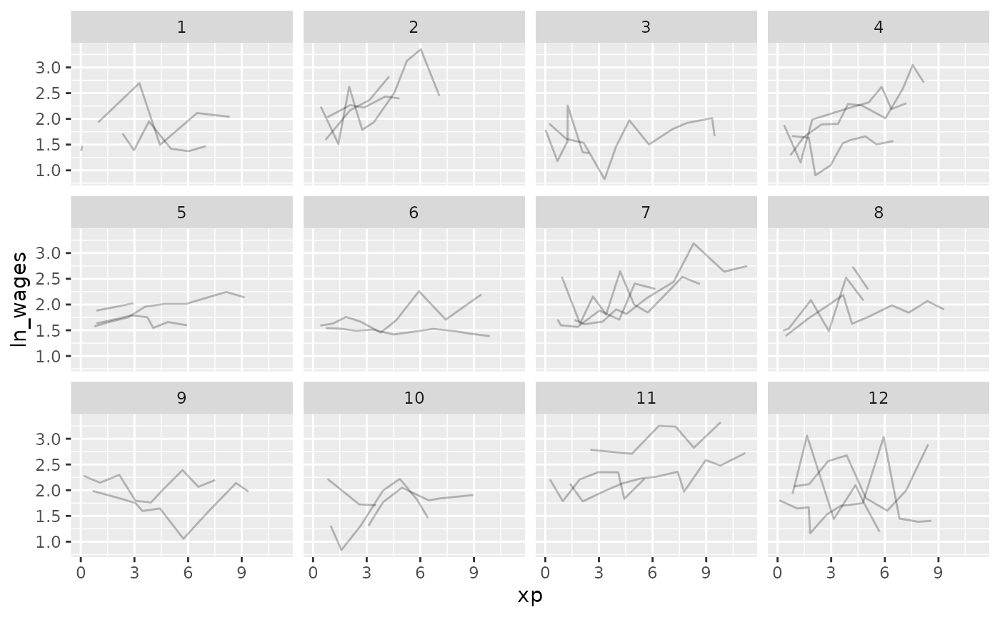
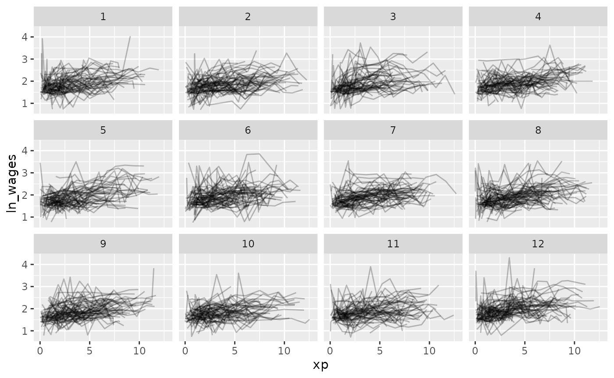
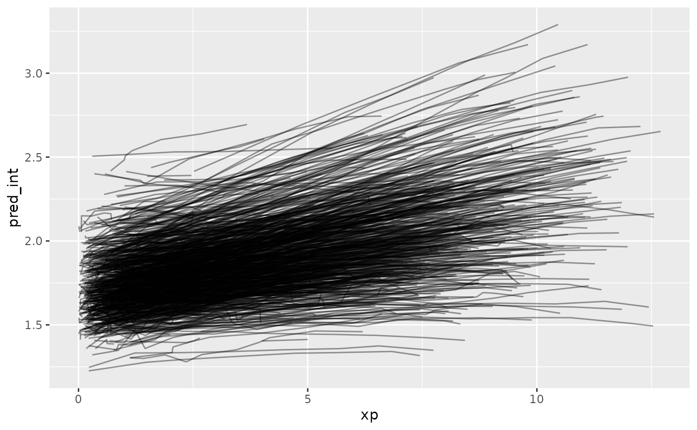
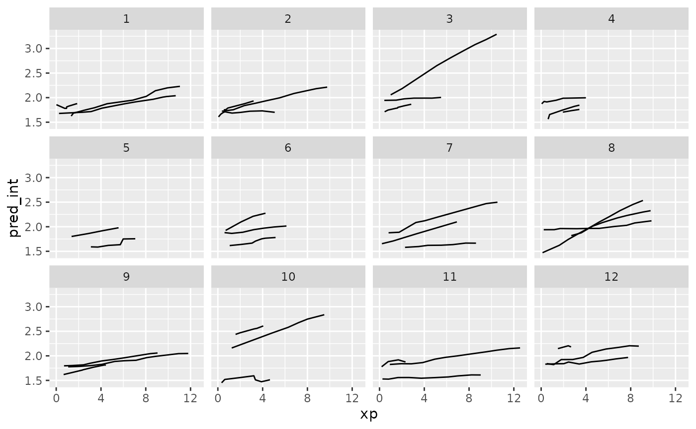
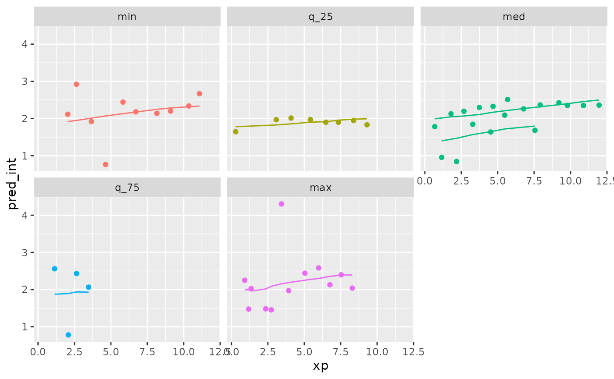
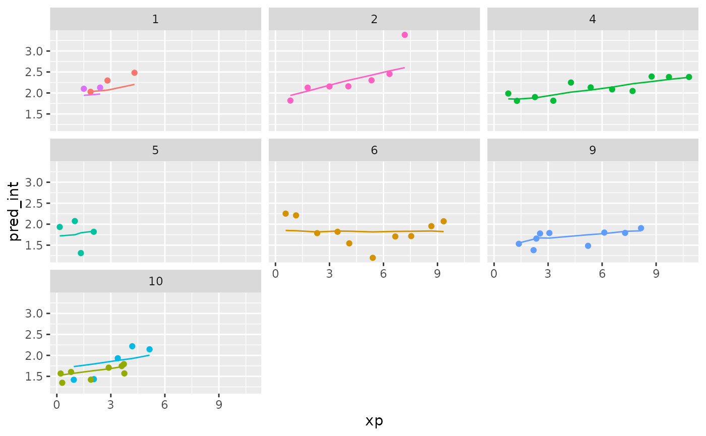

Using brolgar to understand Mixed Effects Models
Source:vignettes/mixed-effects-models.Rmd
mixed-effects-models.Rmdlibrary(brolgar) library(lme4) #> Loading required package: Matrix library(modelr) #> #> Attaching package: 'modelr' #> The following object is masked from 'package:brolgar': #> #> heights library(ggplot2)
Just as it is important to explore your data before modelling, it is important to explore your data after you fit a model, and during the modelling process.
Let’s take our wages data
wages #> # A tsibble: 6,402 x 9 [!] #> # Key: id [888] #> id ln_wages xp ged xp_since_ged black hispanic high_grade #> <int> <dbl> <dbl> <int> <dbl> <int> <int> <int> #> 1 31 1.49 0.015 1 0.015 0 1 8 #> 2 31 1.43 0.715 1 0.715 0 1 8 #> 3 31 1.47 1.73 1 1.73 0 1 8 #> 4 31 1.75 2.77 1 2.77 0 1 8 #> 5 31 1.93 3.93 1 3.93 0 1 8 #> 6 31 1.71 4.95 1 4.95 0 1 8 #> 7 31 2.09 5.96 1 5.96 0 1 8 #> 8 31 2.13 6.98 1 6.98 0 1 8 #> 9 36 1.98 0.315 1 0.315 0 0 9 #> 10 36 1.80 0.983 1 0.983 0 0 9 #> # … with 6,392 more rows, and 1 more variable: unemploy_rate <dbl>
We might explore this by looking at experience against wages, for each individual:
gg_wages_all <- ggplot(wages, aes(x = xp, y = ln_wages, group = id)) + geom_line(alpha = 0.25) gg_wages_all
 But - Ugh. Spaghetti plot.
But - Ugh. Spaghetti plot.
Let’s look at a random sample of people using facet_sample()
gg_wages_all + facet_sample()

Now let’s look at all of the data, arranging by unemploy_rate:
gg_wages_all + facet_strata()

gg_wages_all + facet_strata(along = unemploy_rate)

gg_wages_all + facet_strata(along = xp_since_ged)

gg_wages_all + facet_wrap(~high_grade)

So let’s fit a model where we look at the impact of xp, unemployment rate, and fit an intercept for each individual.
library(lme4) wages_fit_int <- lmer(ln_wages ~ xp + ged + unemploy_rate + (xp |id), data = wages) #> Warning in checkConv(attr(opt, "derivs"), opt$par, ctrl = control$checkConv, : #> Model failed to converge with max|grad| = 0.00672712 (tol = 0.002, component 1)
We can use the tools from modelr to add predictions and residuals to the data
library(modelr) wages_aug <- wages %>% add_predictions(wages_fit_int, var = "pred_int") %>% add_residuals(wages_fit_int, var = "res_int")
Now let’s look at the predictions over xp

Ugh. Straight spaghetti. Let’s sample that.
ggplot(wages_aug, aes(x = xp, y = pred_int, group = id)) + geom_line() + facet_sample()

And let’s explore these according to residuals.
ggplot(wages_aug, aes(x = xp, y = pred_int, group = id)) + geom_line() + facet_strata(along = res_int)

Now let’s add in the data to the predictions.
wages_aug %>% sample_n_keys(size = 9) %>% ggplot(aes(x = xp, y = pred_int, group = id, colour = factor(id))) + geom_line() + geom_point(aes(x = xp, y = ln_wages, colour = factor(id))) + facet_wrap(~id) + theme(legend.position = "none")

What if we grabbed a sample of those who have the best, middle, and worst residuals? Those who are closest to these values:
summary(wages_aug$res_int) #> Min. 1st Qu. Median Mean 3rd Qu. Max. #> -1.305694 -0.159730 -0.009444 0.000000 0.136409 2.148938
We can use keys_near() to return those specified keys that are close to these values. Because this is a tsibble object, we don’t need to specify the key variable here.
wages_aug_near <- wages_aug %>% keys_near(var = res_int) wages_aug_near #> # A tibble: 6 x 5 #> id res_int stat stat_value stat_diff #> <int> <dbl> <fct> <dbl> <dbl> #> 1 122 -1.31 min -1.31 0 #> 2 735 2.15 max 2.15 0 #> 3 2026 -0.00956 med -0.00944 0.000112 #> 4 3961 -0.00933 med -0.00944 0.000112 #> 5 5778 -0.160 q_25 -0.160 0.0000117 #> 6 8246 0.136 q_75 0.136 0.00000353
This shows us the keys where we the residuals match closest to the five number summary.
We can plot this data by joining it back to the wages data with predictions, to see what the spread of predictions is like.
library(dplyr) #> #> Attaching package: 'dplyr' #> The following objects are masked from 'package:stats': #> #> filter, lag #> The following objects are masked from 'package:base': #> #> intersect, setdiff, setequal, union wages_aug_near_full <- left_join(wages_aug_near, wages_aug, by = "id") gg_wages_near <- ggplot(wages_aug_near_full, aes(x = xp, y = pred_int, group = id, colour = stat)) + geom_line() + geom_point(aes(y = ln_wages)) gg_wages_near

gg_wages_near + facet_wrap(~stat) + theme(legend.position = "none")

We can also use stratify_along to group by the worst fits
wages_aug %>% stratify_keys(n_strata = 12, along = res_int) %>% sample_n_keys(size = 9) %>% ggplot(aes(x = xp, y = pred_int, group = id, colour = factor(id))) + geom_line() + geom_point(aes(x = xp, y = ln_wages, colour = factor(id))) + facet_wrap(~.strata) + theme(legend.position = "none")
